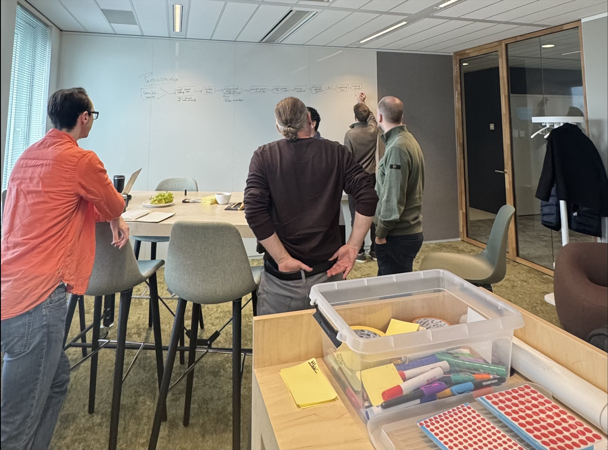
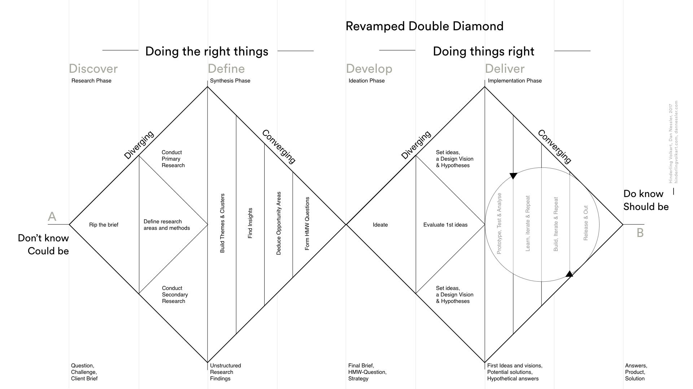
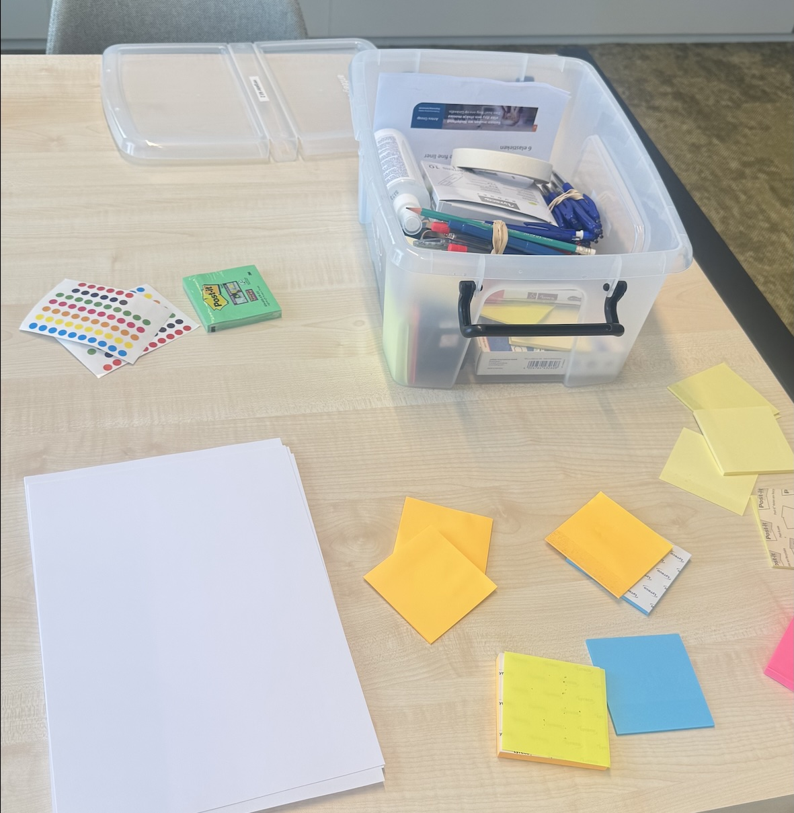

Better prepared for a Design Spurt
An interactive digital booklet that prepares participants before the session for what they can expect.
- Role: UX/UI Designer
- Period: Feb 2026 – June 2026
- Client: Antea Group
- Tools: Figma, Miro board, Adobe InDesign & Adobe Acrobat
Introduction
At Antea Group, the Design Spurt is used as a compact, one-day version of a Design Sprint. During this session, stakeholders, experts and designers work together to understand a problem, develop ideas and arrive at a shared solution direction.
When I started this project, it had not yet been decided which part of the Design Spurt needed improving. Antea Group gave me the freedom to research the existing process and decide for myself where the most important UX opportunity was. So my first step was to understand what participants and facilitators ran into in practice.

Problem
Antea Group wants the Design Spurt to run more efficiently and lead to higher-quality results. At the start of the project it was not yet clear where in the current process the most important opportunities for improvement were.
My role
I independently researched the existing Design Spurt process, mapped the main pain points and defined my design focus based on research. I then organised a co-creation session, translated the results into design decisions, and designed and tested an interactive prototype.
Target audience
Antea Group colleagues and clients who take part in a Design Spurt, both experienced and new participants.
Design question
How can the facilitator of a Design Spurt be better supported, so that participants can collaborate more efficiently and provide high-quality input for the design process?
Double Diamond
For this project I worked according to the Double Diamond model: Discover, Define, Develop and Deliver. First I researched the problem, then I defined my focus, developed ideas and tested my final design.

First, understand where the problem really is
Because the assignment was still broad, I first researched how the Design Spurt was organised and experienced at that time. I combined several research methods so that I didn't only hear what people said, but also saw what happened during a real session.
Expert interview
I spoke with someone who organises and facilitates the Design Spurt to understand how participants are currently prepared and where a lot of explanation is needed during the session.
Insight: there is no fixed place beforehand where participants can calmly look at what a Design Spurt involves.
Observing a real session
During a Design Spurt I observed how participants went through the different steps and which questions came up during the session.
Insight: new participants in particular had many questions about the process, their role and what would happen to their input afterwards.
Talking to participants
I spoke with participants with different levels of experience to understand what information they miss before a Design Spurt.
Insight: experienced participants know better what to expect, while new participants first need to understand the process.
How do other sessions prepare participants?
Once preparation emerged as a recurring problem, I researched how similar workshops inform participants beforehand and how information can be presented briefly and clearly.
Insight: preparation works best when information is short, well-organised and available before the session.
The research showed that new participants in particular start the session without a clear picture of the Design Spurt. They don't always know beforehand what the session involves, why they are taking part and what is expected of them. As a result, questions about the process itself come up during the session, while the attention should really go to the actual problem.
Where is the biggest opportunity for improvement?
I brought together the results from the interviews, observation and desk research and clustered recurring findings. This made it clear that several problems were actually connected to the same moment: the preparation before the Design Spurt.
Little information beforehand
The existing invitation gives participants little context about what a Design Spurt involves and what they can expect.
Differences in prior knowledge
Experienced participants recognise the process, while new participants need much more explanation.
Process questions during the session
Participants ask questions about roles, steps and expectations once the session has already started.
Onboarding takes attention
Time and attention spent explaining the process can't be used to work on the actual problem.
Instead of redesigning the entire Design Spurt, I chose to focus on the moment before the session. My goal became: giving participants enough context beforehand so they can start the Design Spurt with more clarity and fewer process questions.
How can we better prepare new participants?
The Define phase showed that new participants in particular don't know enough before the session about what a Design Spurt involves and what is expected of them.
That's why, for the Develop phase, I formulated one central question:
With this question as a starting point, I organised and facilitated a co-creation session with stakeholders who know the Design Spurt from different roles.
Because the available time was limited, I chose methods that let us first come up with several ideas and then quickly decide which solutions were most relevant and feasible.

Brainwriting
Participants first individually came up with different ways to inform new participants before the Design Spurt. This gave everyone room to contribute ideas without one person dominating the conversation.
Building on ideas
The ideas were then shared and added to. Participants built on each other's solutions and combined different ways of making information before the session clear, short and accessible.
Dot voting
Next, participants voted for the ideas that they felt best answered the main question. This showed which directions had the most support within the group.
Impact / effort
We then compared the strongest ideas on expected impact for new participants and on feasibility. This helped me decide which direction was suitable to develop further within my graduation project.
Which solutions came up?
The co-creation session produced several ways to inform new participants before the session. For example, a short introduction video, a clearer preparation format and a digital Participant Pack that can be shared together with the invitation.
These ideas differed in form, but shared the same goal: giving participants enough context before the Design Spurt, so they better understand what the session involves and what they can expect.
Above all, the solution needed to be short, clear, accessible and easy to share.
Based on that, I chose to develop the Participant Pack further: a compact digital preparation booklet that lets new participants discover before the session what a Design Spurt is, how the session works and what is expected of them.
Why an interactive Participant Pack?
My research showed that new participants in particular need more clarity before the Design Spurt. They want to know what a Design Spurt is, why they are taking part, what their role is and what they can expect during the session.
This information therefore had to be available before the session. This fits the principle of Day 0 preparation: important expectations and basic information are shared beforehand, so participants don't have to figure out during the meeting how the process works.
At the same time, I wanted to avoid participants having to process a lot of information at once beforehand. Based on Sweller's Cognitive Load Theory I chose to split the information into short, clear steps.
That's why a digital Participant Pack suited this need well. It can easily be shared with the invitation, viewed independently and doesn't require participants to learn a new application.
The interactive format also makes it possible to keep the basic information short and only show extra explanation when a participant needs it. This gives new participants enough support, without giving experienced participants unnecessary information.
Short & clear
Only the information new participants need to understand what awaits them during the Design Spurt.
In small steps
The information is divided into short sections, so participants don't have to process everything at once.
Extra explanation when needed
Additional information is only shown when a participant needs it, for example about roles or next steps.
Available before the session
The Participant Pack is shared beforehand, so part of the explanation can already happen before the Design Spurt.
Why these design choices?
Besides the insights from my user research, I used theory to decide how the information in the Participant Pack should be presented.
According to Sweller's Cognitive Load Theory (1988), the amount of information a person can process at once is limited. That's why I spread the information over short pages and only showed additional explanation when a participant chose to see it, for example for the roles and next steps.
I also used the principle of Day-0 preparation from Nielsen Norman Group. Here, important expectations and basic information are made clear before a workshop. That's why the Participant Pack is shared before the Design Spurt, so participants don't first have to learn to understand the session during the meeting itself.
The content came from the user research
The theory helped me decide how to present the information. The user research determined which information needed to be included.
The observation and participant interviews showed that new participants mainly wanted to know what a Design Spurt is, why they are taking part, what their role is and what they can expect during the session. These questions therefore formed the basis for the structure and content of the Participant Pack.
Explore the Participant Pack yourself
I developed the chosen direction into an interactive high-fidelity PDF. Participants can go through the booklet on their own before the Design Spurt.
You can click through the prototype yourself below (the booklet itself is in Dutch).
Booklet not working well in your browser? Open the interactive booklet in a new tab →
Testing with two different perspectives
In the last phase of the project, the available testing time was limited. So rather than testing two similar participants, I deliberately chose participants with different levels of experience with Design Spurts.
This let me test both how someone without much prior knowledge understands the booklet and how well it fits someone who already knows the process better.
| What did I test? | What did I discover? | Design decision |
|---|---|---|
| Purpose of the booklet | Both participants understood that the booklet is meant as preparation for the Design Spurt. | Keep the short introduction and keep it clear. |
| Roles | The different roles were understood, but participants wanted to know more clearly which role was meant specifically for them. | Communicate each person's own role more explicitly before the session. |
| Interaction | Not every clickable element was immediately recognised as interactive. | Make clickable elements visually clearer. |
| Content | The information gave participants a better picture of what they can expect during the Design Spurt. | Keep the current short structure and avoid unnecessary explanation. |
The first tests confirmed that the Participant Pack can answer the most important questions before the session. At the same time, the tests made clear where a next iteration is needed: especially the personal role and how recognisable the interactive elements are could be even clearer.
From a broad question to a focused UX solution
This project didn't start with the assignment to design a booklet. My original question was broad: researching how the Design Spurt could be better supported.
By observing the process, talking to participants and experts and bringing the results together, I discovered that the preparation before the session was an important opportunity for improvement.
Through co-creation I translated this insight into possible solutions and chose a short interactive Participant Pack. The final prototype helps participants understand before the Design Spurt what the session involves, what they can expect and what their role is.
A solution doesn't have to be big to improve a process. For me, the most important UX decision in this project wasn't in the visual design of the booklet, but in finding and defining the right problem to solve.